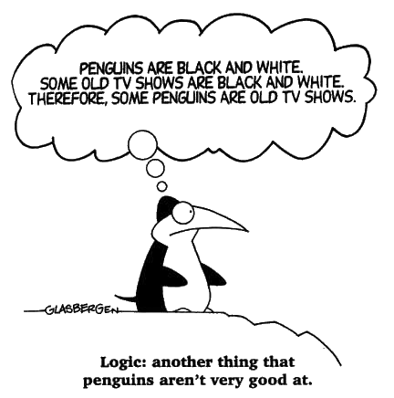

Classical First-order Logic (FOL)

- Two-valued logic - formulae are true (T)
xor false (F)
- ⟦φ⟧ = TV means that φ has the truth
value TV (T or F)
- Language
- Constants and Quantified variables
- Functions and Predicates
- Connectives and Formulae
- Example, from the TPTP problem library
- Interpretation
- Interpretation evaluates formulae as a truth value
- An interpretation is a model of a formula iff
the formula is true in the interpretation
- The designated value is true (T)
- Logical Consequence
- Axioms ⊨ Conjecture if
Every model of the Axioms is a model of the Conjecture
- Contradictory axioms produce omniscience
- Missing axioms can lead to unexpected theorems